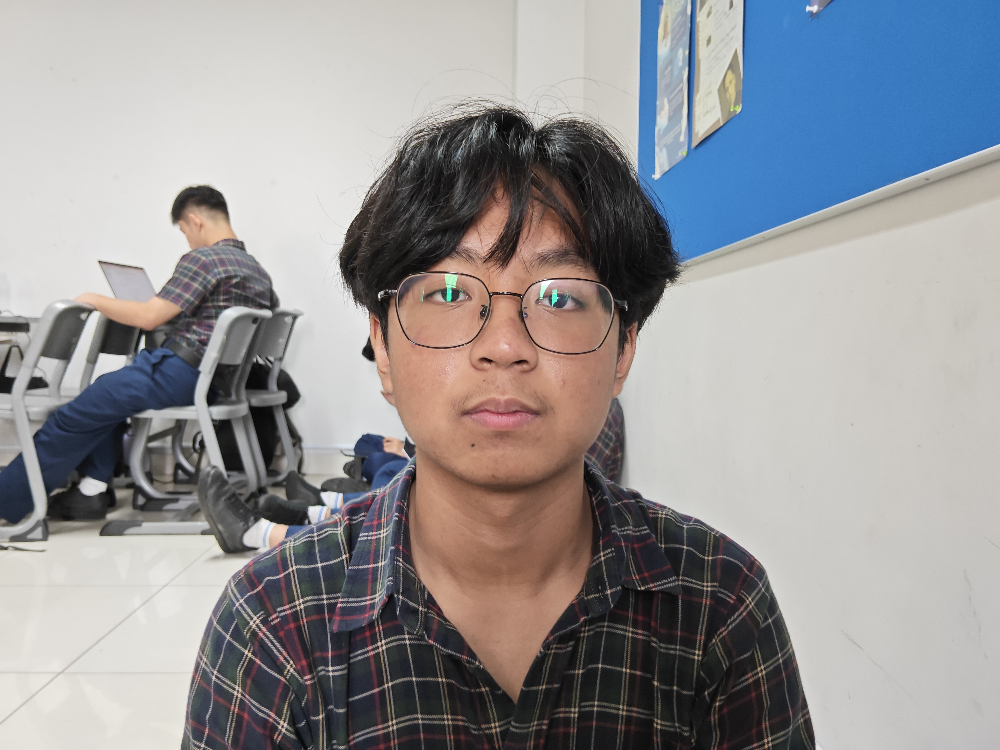
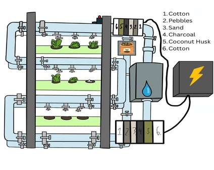
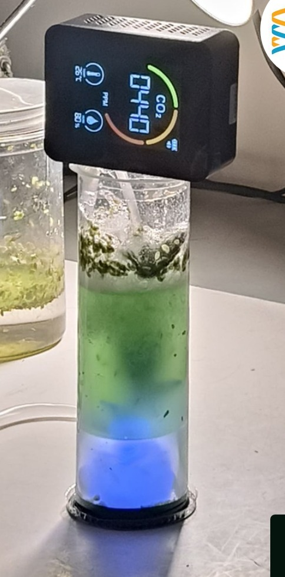

Tugas InformatikaMIKO WIJAYA
Siswa Tingkat Junior
Siswa kelas 11 yang memiliki minat besar pada fisika, seni terapan, dan seni pertunjukan, serta memiliki pengalaman yang memadai dalam penelitian praktis dan karya kreatif secara langsung. Berdedikasi untuk mempelajari pengetahuan baru dan menerapkan pengalaman tersebut pada proyek-proyek di masa depan.
PROJEK

TEKNOPRENEUR
(DALAM BENTUK BAND)

BIOTEKNOLOGI